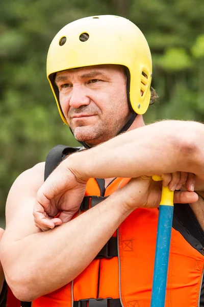

RAPIDS
History
Rapids was born from the wild spirit and deep passion of Samuel Arce, a lifelong adventurer with a love for rivers that runs as deep as the canyons he’s explored. Growing up near the roaring currents of the Andes, Samuel spent his youth navigating untamed waters, drawn to the thrill and freedom that only white-water could offer. After years of guiding expeditions across South America and learning the art of river navigation from some of the best in the business, he knew it was time to carve his own path.
In 2012, with nothing but a raft, a vision, and an unstoppable drive, Samuel launched Rapids—a company built on the belief that nature’s wildest places should be experienced, respected, and shared. What started as a small operation with weekend tours and a rented van quickly grew into a trusted name in adventure tourism. Today, Rapids is known for its heart-pounding excursions, unmatched safety standards, and passionate guides who carry Samuel’s spirit in every trip down the river.